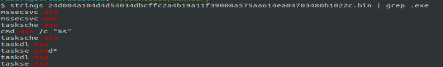
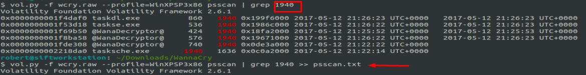
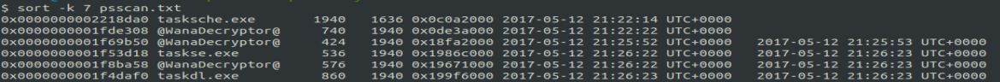
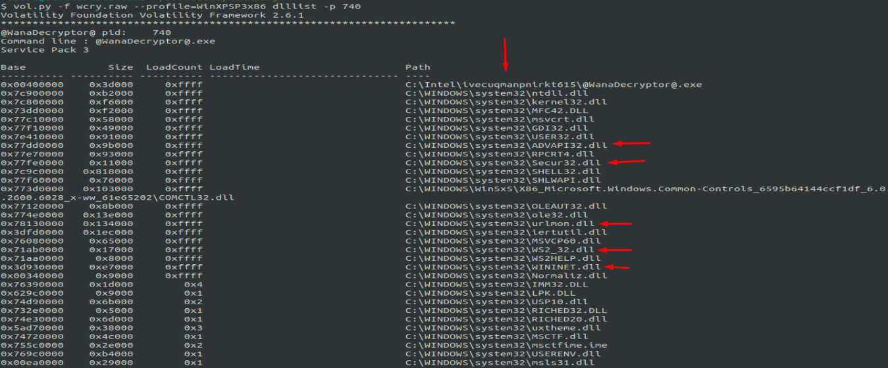

Analisis de Memory de WannaCry | Parte I _

En esta entrada vamos a analizar un dump de memory de un host infectado con WannaCry usando Volatility, solo analizaremos el analisis forense de memoria, es decir, no se va a cubrir el vector iniciar, la propagacion y el recovery.
WannaCry
WannaCry, también conocido como WanaCrypt0r 2.0, es un programa dañino de tipo ransomware. En septiembre de 2018, el Departamento de Justicia de los Estados Unidos inculpó al norcoreano Park Jin Hyok de ser el creador de WannaCry y haber acometido el ataque informático de alcance mundial en 2017. + Info WannaCry
Disclaimer
- Favor usar una VM para este tipo de analisis.
- Si necesitas el zip(junto con el password) puedes contactarme en Twitter o Telegram
- No nos hacemos responsables sobre cualquier consecuencias/dano si no obedece lo descrito aqui.
- Esto es con fines educativos.
Analysis.
La metodologia a usar son los 6 pasos de SANS:
- Identify rogue processes
- Analyze process DLLs and handles
- Review network artifacts
- Look for evidence of code injection
- Check for signs of rootkit
- Dump suspicious processes and drivers
+ +Info SANS Memory Analysis.
Antes de proceder, vamos a hacer un analisis estatico para verificar indicadores de compromisos, empezaremos usando el comando strings y grep:
La unica URL conseguida y es lo que se conoce como KillSwitch. El investigador MalwareTech descubrió que los programadores del ransomware lo habían creado para comprobar si una URL sin sentido conducía a una página web activa. Curioso por qué el ransomware buscaría ese dominio, MalwareTech lo registró él mismo. Resulta que esa inversión de $ 10,69 fue suficiente para detener el ransom.Resultó que mientras el dominio no estuviera registrado e inactivo, la consulta no tuvo ningún efecto en la propagación del ransomware. Pero una vez que el ransomware verificó la URL y la encontró activa, se cerró. +Info: How to Accidentally stop a Global Cyber Attack by MalwareTech
Estos indicadores de compromiso de WannaCry le sirve para ejecutar tareas.
Volatility
Volatility es framework open-source para Incident Response y Malware Analysis. Primero vamos a obtener informacion sobre el dump.
vol.py -f wcry.raw imageinfoAhora usaremos el plugin pslist para verificar los procesos, es importante estar familarizado con los procesos nativos del sistema operativo:
vol.py -f wcry.raw pslistPID 1940 y PID 740 ambos procesos se ven completamente extraños, ahora usaremos psscan para ver un listado mas completo de los procesos (nos lista los procesos terminados, que seria PIDD):
vol.py -f wcry.raw --profile=WinXPSP3x86 psscanWannaDecryptor y tasks* estan relacionados entre si, eso lo podemos observar por el PIDD: 1940, vamos analizar el timeline
Y ordenamos con sort
Podemos hacer una busqueda de inteligencia sobre esos procesos :), ahora vamos a listar los directorios y librerias utilizando el plugin dlllist apuntando al PID 1940 y 740
vol.py -f wcry.raw --profile=WinXPSP3x86 dlllist -p 1940Un directorio bastante sospechoso :)
WannaDecryptor usa el mismo directorio, tambien podemos observar una las siguientes dll:
- ADVAPI32.dll : Empleada para querys en el registro
- Secur32.dll : Encriptacion
- urlmon.dll : Interactuar con navegadores
- WS2_32.dll : Creacion de sockets
- WININT.dll : Interacion de red con aplicaciones
Ahora verificaremos el plugin handles para listar files, registry key, events, desktops, threads,etc.
vol.py -f wcry.raw --profile=WinXPSP3x86 handles -p 1940Observamos lo que se conoce como Mutex; esto sirve para que una vez el host este infectado, de forma preventiva no corre mas de una instancia del malware, en este caso tenemos MsWinZonesCacheCounterMutexA (En google obtenemos mucha info del mismo).
Dado de que no encontramos conexiones con los plugins connections y connscan podemos usar bulk_extractor para extraer las conexiones desde el memory dump:
bulk_extractor -E net -o pcap/ wcry.rawY vamos a obtener unos cuantos IoC:
tshark -T fields -e ip.src -r packets.pcapObtenemos los siguientes IPs:
134.119.3.164
192.168.56.101
199.254.238.52
213.61.66.118